Xenium Human Breast Cancer (GiottoDisk)
Source:vignettes/xenium_human_breast_cancer_giottodisk.Rmd
xenium_human_breast_cancer_giottodisk.Rmd1 Overview
This tutorial reads a 10x Xenium In Situ export as an on-disk GiottoDisk project. The expression matrix is built by aggregating transcripts onto segmentation polygons, and proceeds through filtering, clustering, cell typing and spatial niches. Nothing is held in memory: the matrix and the 142.7 million transcripts stay on disk throughout.
2 Packages
2.1 arrow
GiottoDisk writes its parquet cache with zstd compression, so arrow has to be built with zstd support. Install it before Giotto.
has_arrow <- requireNamespace("arrow", quietly = TRUE)
zstd <- TRUE
if (has_arrow) {
zstd <- arrow::arrow_info()$capabilities[["zstd"]]
}
if (!has_arrow || !zstd) {
Sys.setenv(ARROW_WITH_ZSTD = "ON")
install.packages("arrow", repos = c("https://apache.r-universe.dev"),
type = "source")
}2.2 Giotto and other packages
remotes::install_github("giotto-suite/GiottoUtils", ref = "dev")
GiottoUtils::suite_install("GiottoDisk")
BiocManager::install(c("scran", "Rarr"))
install.packages(c("duckdb", "DBI", "dbplyr", "wk", "ggdendro"))3 The dataset
10x Genomics Xenium In Situ on FFPE human breast cancer. The published dataset covers three sections of sample S1; this tutorial uses S1_Bot only, and every figure and count below is that one section. S1_Bot is ductal carcinoma in situ, T1c N0 M0, grade 3, HER2 1+: tumor fills the ducts but an intact myoepithelial layer still bounds them, with stroma and immune infiltrate around both.
| panel | Xenium Human Breast Cancer HK Gene Panel, 280 targets + 261 controls |
| cells | 254,480 |
| transcripts | 142,664,090 decoded, 117,682,273 above the Q20 cutoff |
| area | 89.0 mm^2 of section S1_Bot, 204 fields of view, 0.2125 um/px |
The release is Xenium v1 Human Breast FFPE with Biomarkers and Housekeeping Genes Custom Panel. That page opens on an overview; the files are under Output and supplemental files > Section 1, bottom > General output files > Xenium Output Bundle (Xenium Explorer subset), or fetch it directly:
curl -O https://cf.10xgenomics.com/samples/xenium/4.0.0/Human_Breast_Biomarkers_S1_Bot/Human_Breast_Biomarkers_S1_Bot_xe_outs.zipThat is 5.9 GB zipped, 5.6 GB unpacked, and holds
experiment.xenium, gene_panel.json,
morphology_focus/ and four *.zarr.zip
archives.
| relevant zarr product | what it holds | size |
|---|---|---|
transcripts.zarr.zip
|
142.7 M decoded detections in a 7-level tile grid | 2.72 GB |
cells.zarr.zip
|
centroids, areas, and cell + nucleus boundary vertices | 300 MB |
cell_feature_matrix.zarr.zip
|
vendor cell x gene CSC matrix | 43 MB |
gene_panel.json carries the panel.
experiment.xenium supplies the micron scaling. The DAPI
channel of morphology_focus/ is the backdrop for the zoom
figures later on.
4 Setup
suppressMessages({
library(Giotto); library(GiottoClass); library(GiottoVisuals)
library(GiottoDisk)
library(data.table); library(ggplot2); library(cowplot); library(future)
})
# hide progress bars, and run GiottoDisk's tiled operations on 4 parallel
# workers
options(progressr.enable = FALSE)
future::plan(future::multisession, workers = 4)
XENIUM_DIR <- Sys.getenv("XENIUM_ZARR_DIR", "/path/to/xenium/outs")
PROJECT_DIR <- "vault" # the GiottoDisk project directory
plot_theme <- theme_classic(base_size = 9)
results_folder <- "results" # where every Giotto figure is saved as a PNG
instructions <- createGiottoInstructions(save_dir = results_folder,
save_plot = TRUE, show_plot = TRUE,
return_plot = FALSE)5 Ingest
5.1 Set up the disk backend
142.7 million transcripts and 254,480 cells are too large to hold in memory, so this runs as a GiottoDisk disk-backed project.
# a managed project directory to hold the object on disk
giotto_source <- sourceCreate(PROJECT_DIR, type = "gDirSource")
# send expression and spatial writes there instead of a temp folder
setArtifactDumpDir(giotto_source)5.2 Reading a zarr export
All four archives are read in place without unpacking, and each product is converted to parquet once and cached in the project directory.
5.3 Create the giotto object
g_xen <- createGiottoXeniumObject(
xenium_dir = XENIUM_DIR,
backend = giotto_source,
bounds_path = list(cell = "cell"),
qv_threshold = 20, # 10x's recommended Phred cutoff, applied as the grid is read
load_transcripts = TRUE, # all 142.7 M detections, as a disk-backed points store
load_expression = TRUE, # the vendor matrix -- QC cross-check only, see 6.1
load_cellmeta = TRUE,
load_images = "focus",
instructions = instructions)
g_xen## An object of class giotto
## >Active spat_unit: cell
## >Active feat_type: rna
## dimensions : 280, 254480 (features, cells)
## [SUBCELLULAR INFO]
## polygons : cell
## features : rna NegControlProbe UnassignedCodeword NegControlCodeword
## [AGGREGATE INFO]
## expression -----------------------
## [cell][rna] raw
## [cell][NegControlProbe] raw
## [cell][NegControlCodeword] raw
## [cell][UnassignedCodeword] raw
## spatial locations ----------------
## [cell] raw
## attached images ------------------
## images : 4 items...
##
##
## Use objHistory() to see steps and params used5.4 Save checkpoint
A backed project writes named snapshots into the project directory.
g_xen <- saveGiotto(g_xen, name = "ingest")Reload it with
loadGiotto(PROJECT_DIR, name = "ingest").
# both are disk stores, so neither the matrix nor the transcripts are in memory
class(g_xen@expression$cell$rna$raw[])
class(g_xen@feat_info$rna@spatVector)
list_spatial_info(g_xen)## [1] "parquetExprStore"
## attr(,"package")
## [1] "GiottoDisk"## [1] "parquetGeomTileStore"
## attr(,"package")
## [1] "GiottoDisk"| spat_info |
|---|
| cell |
Only cell boundaries are loaded; the archive also
carries nucleus boundaries, unused here.
5.5 Aggregating transcripts into expression
The transcripts carry no cell assignment, so it is computed here by overlapping the detections with the segmentation polygons.
# the vendor matrix currently sits under "raw", which is the name
# aggregateFeatures() will write to below, so move it aside first
vendor_expr <- GiottoClass::getExpression(g_xen, values = "raw", output = "exprObj")
g_xen <- GiottoClass::setExpression(g_xen, vendor_expr, name = "vendor_raw",
spat_unit = "cell", feat_type = "rna")
g_xen <- aggregateFeatures(g_xen, spat_info = "cell", feat_info = "rna",
name = "raw", verbose = TRUE)
# "raw" is now the aggregated matrix and "vendor_raw" the vendor's
list_expression(g_xen)| spat_unit | feat_type | name |
|---|---|---|
| cell | rna | raw |
| cell | rna | vendor_raw |
| cell | NegControlProbe | raw |
| cell | NegControlCodeword | raw |
| cell | UnassignedCodeword | raw |
6 Quality control and filtering
6.1 Checking the aggregation against the vendor matrix
Vendor counts against transcript-derived counts
The vendor’s own cell-by-gene matrix was built by 10x’s pipeline from the same detections. It is an independent implementation of the same operation, so comparing the two is a real check on the aggregation.
vendor_store <- GiottoClass::getExpression(g_xen, values = "vendor_raw", output = "exprObj")
derived_store <- GiottoClass::getExpression(g_xen, values = "raw", output = "exprObj")
totals <- rbindlist(lapply(list(vendor_store, derived_store), function(x)
dplyr::collect(dplyr::summarise(storeRead(x[], output = "query"),
counts = sum(value, na.rm = TRUE),
nonzeros = dplyr::n()))))
totals[, source := c("vendor cell_feature_matrix", "aggregated from transcripts")]
totals[, .(source, counts, nonzeros)]| source | counts | nonzeros |
|---|---|---|
| vendor cell_feature_matrix | 89353891 | 20988462 |
| aggregated from transcripts | 86316180 | 20653522 |
The totals should not match exactly: 10x applies nucleus-expansion
rules where this aggregation is a plain point-in-polygon test at
qv > 20. What matters is agreement per cell,
below.
per_cell <- function(exprobj) {
store <- exprobj[]
dt <- as.data.table(dplyr::collect(dplyr::summarise(
dplyr::group_by(storeRead(store, output = "query"), row_id),
total = sum(value, na.rm = TRUE))))
dt[, .(cell_ID = store@cell_ids[row_id], total)]
}
cmp <- merge(per_cell(vendor_store), per_cell(derived_store),
by = "cell_ID", suffixes = c("", "_derived"))
setnames(cmp, c("total", "total_derived"), c("vendor", "derived"))
cat(sprintf("cells compared: %s\n", format(nrow(cmp), big.mark = ",")))
p_vendor <- ggplot(cmp[vendor > 0 & derived > 0], aes(vendor, derived)) +
geom_point(size = 0.2, alpha = 0.12, stroke = 0) +
geom_abline(slope = 1, intercept = 0, linetype = "dashed", color = "#C44E52") +
scale_x_log10() + scale_y_log10() +
labs(x = "vendor counts per cell", y = "transcript-aggregated counts per cell",
subtitle = sprintf("Spearman rho = %.3f over %s cells",
cor(cmp$vendor, cmp$derived, method = "spearman"),
format(nrow(cmp), big.mark = ","))) +
plot_theme
p_vendor
all_plots_save_function(g_xen, p_vendor, save_name = "vendor_vs_aggregated")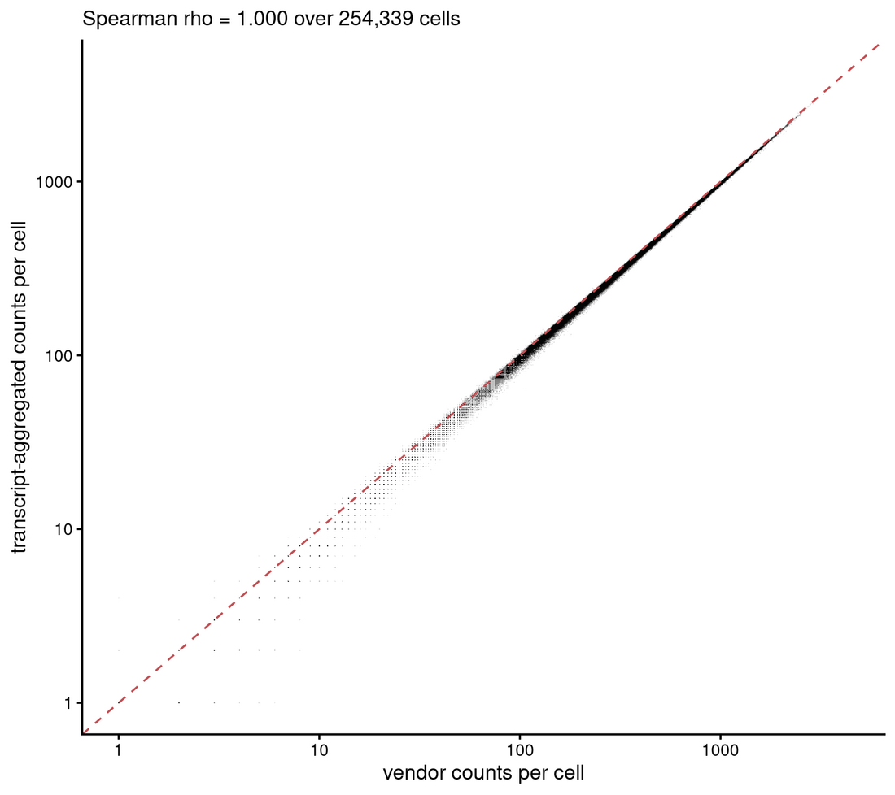
# the check is done, so drop the vendor matrix: no step below uses it, and
# everything downstream runs on the aggregated "raw"
g_xen <- GiottoClass::setExpression(g_xen, NULL, name = "vendor_raw", spat_unit = "cell",
feat_type = "rna")6.2 Filtering
g_xen <- addStatistics(g_xen, stats = "cell", expression_values = "raw")
# the same statistics for the 20 negative-control probes, which target nothing
# and so measure this panel's noise floor
g_xen <- addStatistics(g_xen, feat_type = "NegControlProbe",
stats = "cell", expression_values = "raw")Negative-control probe statistics
neg <- pDataDT(g_xen, feat_type = "NegControlProbe")
rna <- pDataDT(g_xen)
# mean, not median: most cells detect no control probe at all, so the median
# is 0 and a ratio against it is undefined
rna_per_feat <- mean(rna$total_expr, na.rm = TRUE) / 280
neg_per_feat <- mean(neg$total_expr, na.rm = TRUE) / 20
data.table(
metric = c("mean counts / cell, 280-gene panel",
"mean counts / cell, negative-control probes",
"cells with any control-probe count (%)",
"signal-to-noise, per feature"),
value = c(round(mean(rna$total_expr, na.rm = TRUE), 1),
round(mean(neg$total_expr, na.rm = TRUE), 3),
round(100 * mean(neg$total_expr > 0, na.rm = TRUE), 1),
if (neg_per_feat > 0) round(rna_per_feat / neg_per_feat, 1) else NA_real_))| metric | value |
|---|---|
| mean counts / cell, 280-gene panel | 339.200 |
| mean counts / cell, negative-control probes | 0.023 |
| cells with any control-probe count (%) | 2.200 |
| signal-to-noise, per feature | 1036.900 |
Control probes carry no real target, so a count on one is non-specific binding rather than true signal, and their rate is the probe-level noise floor. Real genes are detected about a thousand times more often, and most cells carry no control count at all, so no background correction is needed.
gene_limits <- quantile(pDataDT(g_xen)$nr_feats, c(0.01, 0.99), na.rm = TRUE)
p_section <- spatPlot2D(g_xen, cell_color = "nr_feats", color_as_factor = FALSE,
point_size = 0.25, point_shape = "border",
point_border_stroke = 0, coord_fix_ratio = 1,
background_color = "white",
show_plot = FALSE, return_plot = TRUE,
save_plot = FALSE) +
scale_fill_viridis_c(transform = "sqrt", limits = gene_limits,
oob = scales::squish, name = "genes\nper cell")
p_section
all_plots_save_function(g_xen, p_section, save_name = "section_genes_per_cell")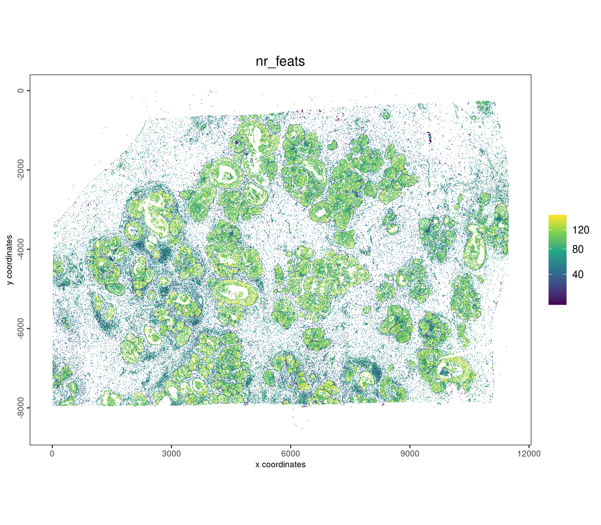
qc_md <- pDataDT(g_xen)[, .(counts = median(total_expr, na.rm = TRUE),
genes = median(nr_feats, na.rm = TRUE))]
p_counts <- filterDistributions(g_xen, detection = "cells", method = "sum",
nr_bins = 90, show_plot = FALSE,
return_plot = TRUE, save_plot = FALSE) +
scale_x_log10() +
geom_vline(xintercept = qc_md$counts, color = "grey25", linetype = "dotted") +
labs(subtitle = sprintf("median %s counts", format(qc_md$counts, big.mark = ","))) +
plot_theme
p_genes <- ggplot(pDataDT(g_xen), aes(nr_feats)) +
geom_histogram(binwidth = 1, fill = "lightblue") +
geom_vline(xintercept = 10, color = "#C44E52", linetype = "dashed") +
geom_vline(xintercept = qc_md$genes, color = "grey25", linetype = "dotted") +
labs(x = "genes per cell", y = "cells",
subtitle = sprintf("median %s genes", qc_md$genes)) + plot_theme
p_qc <- plot_grid(p_counts, p_genes, nrow = 1)
p_qc
all_plots_save_function(g_xen, p_qc, save_name = "qc_distributions")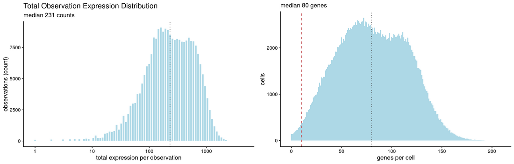
min_det_feats_per_cell = 10 drops cells, set low because
a cell here detects only a few tens of the 280 genes.
feat_det_in_min_cells = 100 drops genes, keeping those seen
in at least 100 cells.
g_xen <- filterGiotto(g_xen,
expression_threshold = 1,
feat_det_in_min_cells = 100,
min_det_feats_per_cell = 10)
g_xen7 Normalization and dimension reduction
g_xen <- normalizeGiotto(g_xen, scale_feats = FALSE, scale_cells = FALSE,
scalefactor = 6000)
g_xen <- addStatistics(g_xen, stats = c("cell", "feature"))
SEED <- 1234
g_xen <- runPCA(g_xen, feats_to_use = NULL, scale_unit = TRUE, center = TRUE,
ncp = 50, method = "auto", set_seed = TRUE,
seed_number = SEED, verbose = FALSE)feats_to_use = NULL uses the whole panel, and there is
no calculateHVF() step. On a 280-gene targeted panel every
gene was chosen to be informative, so selecting highly variable features
from it discards deliberate design rather than noise.
screePlot(g_xen, ncp = 50, verbose = FALSE)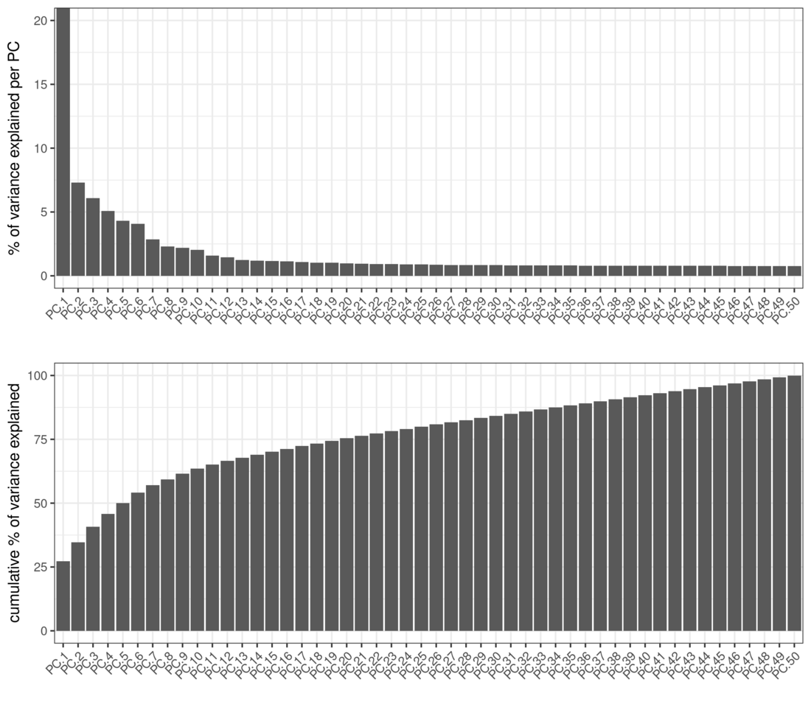
cell_metadata <- pDataDT(g_xen)
pc_matrix <- getDimReduction(g_xen, reduction_method = "pca", output = "matrix")
shared_cells <- intersect(rownames(pc_matrix), cell_metadata$cell_ID)
cell_depth <- cell_metadata$total_expr[match(shared_cells, cell_metadata$cell_ID)]
pc_depth_cor <- data.table(
pc = seq_len(ncol(pc_matrix)),
abs_cor = abs(as.numeric(cor(pc_matrix[shared_cells, , drop = FALSE],
log10(pmax(cell_depth, 1))))))
p_pc_depth <- ggplot(pc_depth_cor[pc <= 30], aes(pc, abs_cor, fill = abs_cor > 0.5)) +
geom_col(width = 0.75) + geom_hline(yintercept = 0.5, linetype = "dashed") +
scale_fill_manual(values = c(`FALSE` = "#BBBBBB", `TRUE` = "#C44E52"), guide = "none") +
labs(x = "principal component",
y = expression("|correlation| with log"[10] * " total counts"),
subtitle = sprintf("PC1 |r| = %.3f", pc_depth_cor$abs_cor[1])) + plot_theme
p_pc_depth
all_plots_save_function(g_xen, p_pc_depth, save_name = "pc_depth_correlation")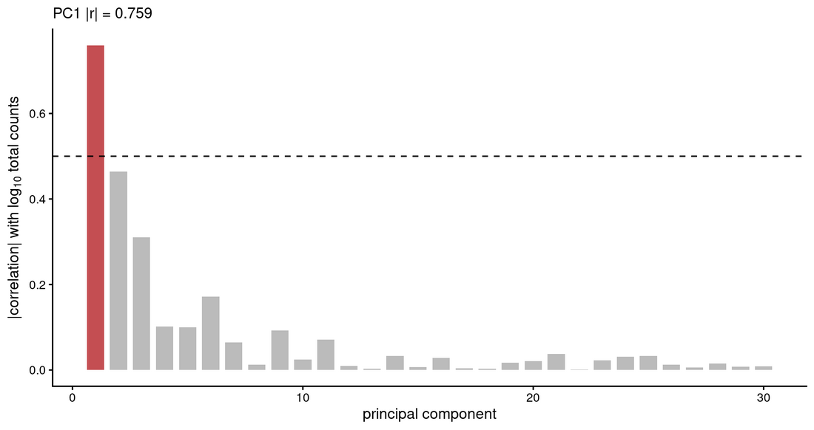
# drop PC1 only if the figure above shows it is a depth axis
PCS_USE <- if (pc_depth_cor$abs_cor[1] > 0.5) 2:30 else 1:30
cat("dimensions_to_use =", deparse(PCS_USE), "\n")## dimensions_to_use = 2:308 Neighbors, UMAP, clustering
g_xen <- createNearestNetwork(g_xen, k = 30, dimensions_to_use = PCS_USE,
engine = "hnsw", ef = 400,
n_threads_build = 1, verbose = FALSE)
g_xen <- doLeidenCluster(g_xen, name = "leiden_clus", resolution = 1,
n_iterations = 20, set_seed = TRUE,
seed_number = SEED)
g_xen <- runUMAP(g_xen, dimensions_to_use = PCS_USE, n_neighbors = 30,
min_dist = 0.3, spread = 1, n_sgd_threads = 0,
nn_engine = "annoy", set_seed = TRUE, seed_number = SEED,
verbose = FALSE)
g_xen <- saveGiotto(g_xen, name = "clustered")
cell_metadata <- pDataDT(g_xen)
cell_metadata[, clus := factor(leiden_clus,
levels = sort(unique(as.integer(leiden_clus))))]
CLUS_LEVELS <- levels(cell_metadata$clus)
LEIDEN_PAL <- setNames(getDistinctColors(length(CLUS_LEVELS)), CLUS_LEVELS)
p_umap_clusters <- plotUMAP(g_xen, cell_color = "leiden_clus",
cell_color_code = LEIDEN_PAL,
point_size = 0.25, point_alpha = 0.4,
point_shape = "border", point_border_stroke = 0,
show_center_label = FALSE,
show_plot = FALSE, return_plot = TRUE,
save_plot = FALSE)
p_umap_genes <- plotUMAP(g_xen, cell_color = "nr_feats", color_as_factor = FALSE,
cell_color_gradient = "viridis",
gradient_style = "sequential",
point_size = 0.25, point_alpha = 0.4,
point_shape = "border", point_border_stroke = 0,
show_plot = FALSE, return_plot = TRUE,
save_plot = FALSE)
p_umap_genes <- p_umap_genes +
scale_fill_viridis_c(transform = "log10", name = "genes\nper cell")
p_clusters <- plot_grid(p_umap_clusters, p_umap_genes, nrow = 1,
rel_widths = c(1, 0.95))
p_clusters
all_plots_save_function(g_xen, p_clusters, save_name = "umap_clusters")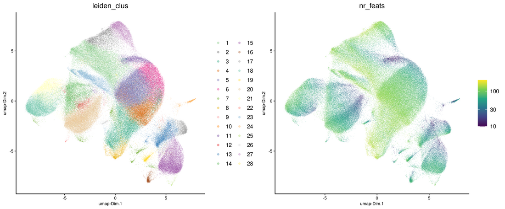
9 Markers
scran_markers <- findScranMarkers_one_vs_all(g_xen,
cluster_column = "leiden_clus",
expression_values = "normalized",
verbose = FALSE)
markers_de <- as.data.table(scran_markers)[
, .(feats, cluster = as.character(cluster), logFC, p_value = p.value, FDR, ranking)]
markers_de <- markers_de[logFC >= 0.25 & FDR <= 0.05][order(cluster, ranking)]
head(markers_de, 5)| feats | cluster | logFC | p_value | FDR | ranking |
|---|---|---|---|---|---|
| MYLK | 1 | 3.794006 | 0 | 0 | 1 |
| KRT14 | 1 | 3.688197 | 0 | 0 | 2 |
| KRT5 | 1 | 3.608897 | 0 | 0 | 3 |
| TAGLN | 1 | 3.560326 | 0 | 0 | 4 |
| ACTA2 | 1 | 3.423206 | 0 | 0 | 5 |
top_markers <- markers_de[order(cluster, ranking)][, head(.SD, 10), by = cluster]
cluster_table <- merge(
cell_metadata[, .(cells = .N), by = .(cluster = as.character(clus))],
top_markers[, .(top_genes = paste(feats, collapse = ", ")), by = cluster],
by = "cluster", all.x = TRUE)
cluster_table[is.na(top_genes), top_genes := "(no markers passed the filter)"]
cluster_table[, cluster := factor(cluster, levels = CLUS_LEVELS)]
setorder(cluster_table, cluster)
cluster_table[]| cluster | cells | top markers |
|---|---|---|
| 1 | 26,082 | MYLK, KRT14, KRT5, TAGLN, ACTA2, COL17A1, KRT17, SEMA3C, DSP, SLC39A6 |
| 2 | 6,034 | S100A14, CD24, TAGLN, SEMA3C, ACTA2, KRT14, VTCN1, OXTR, COL17A1, SERPINA3 |
| 3 | 19,997 | GATA3, TYMS, SLC39A6, HMGB2, FOXA1, EPCAM, MLPH, FADS2, RRM2, DSP |
| 4 | 14,931 | GATA3, CD24, SLC39A6, FOXA1, MLPH, AGR3, ESR1, EPCAM, DSP, NAT1 |
| 5 | 32,289 | MLPH, SLC39A6, SCUBE2, FOXA1, AGR3, GATA3, TFF3, ESR1, TPD52, NPY1R |
| 6 | 14,646 | SLC39A6, GATA3, FOXA1, MLPH, AGR3, MDM2, SCUBE2, EPCAM, TPD52, DSP |
| 7 | 3,991 | S100A9, S100A8, LYZ, CD74, CD68, CD163, ARHGDIB, HLA-G, PECAM1, HSPA6 |
| 8 | 3,864 | MKI67, PRR11, TOP2A, CENPF, CCNB1, HMGB2, UBE2C, AURKA, ANLN, CDC20 |
| 9 | 2,478 | ADIPOQ, ESR1, MLPH, AGR3, SCUBE2, FOXA1, SLC39A6, GATA3, EPCAM, NPY1R |
| 10 | 2,719 | MLPH, CPA3, SLC39A6, GATA3, AGR3, ESR1, FOXA1, SCUBE2, EPCAM, TPD52 |
| 11 | 3,832 | CXCL14 |
| 12 | 1,766 | SFRP4, FBLN1, C1R, CCDC80, MMP2, LEPR, IGFBP3, IL1R1, IGFBP5, TAGLN |
| 13 | 9,943 | CD74, LYZ, CD68, ITGAX, HSPA6, ARHGDIB, CD163, CXCR4, PECAM1, CD83 |
| 14 | 11,378 | PDGFRB, LAMB1, CXCL14, LAMA2, TIMP1, MMP2, LOXL1, IGFBP5, CCDC80, MMP11 |
| 15 | 16,997 | TRAC, IL7R, ARHGDIB, CXCR4, CD3E, IL2RG, CD74, CYTIP, CCL5, HLA-G |
| 16 | 2,134 | MS4A1, CD74, BANK1, TNFRSF13C, CXCR4, ARHGDIB, IL2RG, CYTIP, BIRC3, HLA-G |
| 17 | 3,658 | LYVE1, CD163, CD74, CD68, HSPA6, COLEC12, SLC40A1, CXCL12, PECAM1, ARHGDIB |
| 18 | 14,603 | AQP1, PECAM1, VWF, PLVAP, FLT1, HSPG2, RGS5, CLEC14A, COL4A1, CD74 |
| 19 | 1,853 | TENT5C, CD27, IL2RG, PECAM1, SDC1, CD74, BIRC3, CYTIP, HLA-G, DNAJC3 |
| 20 | 27,476 | CXCL12, C1R, MMP2, LAMB1, FBLN1, LAMA2, CCDC80, PDGFRB, ADH1B, COLEC12 |
| 21 | 9,577 | RGS5, ACTA2, PDGFRB, TAGLN, COL4A1, PECAM1, NDUFA4L2, IGFBP5, AQP1, MYLK |
| 22 | 287 | MMP12, MMP9, CHIT1, APOC1, MUC6, TIGIT |
| 23 | 9,606 | PTN, CD24, KRT23, KIT, VTCN1, SFRP1, SERPINA3, KRT6B, KRT15, ANPEP |
| 24 | 2,733 | CPA3, KIT, CXCL12, MMP2, C1R, LAMB1, LAMA2, CCDC80, FBLN1, PDGFRB |
| 25 | 303 | MKI67, ARHGDIB, TRAC, CD8A, CD3E, CD74, HMGB2, IL2RG, TYMS, CCL5 |
| 26 | 836 | LYVE1, PECAM1, COLEC12, LAMA4, VWF, HSPG2, COL4A1, HLA-G, NDRG1, IL1R1 |
| 27 | 8,136 | S100A14, ANKRD30A, CD24, VTCN1, SERPINA3, KRT19, MLPH, LYPD3, PIP, MDM2 |
| 28 | 166 | PIP, ANKRD30A, TFPI2, FASN, LDHB, PGR, LTF, MLPH, SCUBE2, IL1R1 |
10 Naming the clusters
Two sources of evidence: the de novo markers above, and the dot plot of curated panel genes below, which checks the labels against marker genes chosen independently of this clustering.
10.1 Curated marker panels
One curated gene set per broad cell type, restricted to what this 280-gene the 280-gene breast panel.
breast_markers_l1 <- list(
epithelial_luminal = c("EPCAM", "FOXA1", "GATA3", "ESR1", "AR", "PGR",
"SLC39A6", "AGR3", "MLPH", "KRT19", "TFF3",
"SCGB2A1", "SCGB2A2", "ANKRD30A", "TACSTD2", "CD24"),
epithelial_basal = c("KRT5", "KRT14", "KRT17", "KRT6B", "TP63",
"SERPINB5", "CDH3", "LAMB3", "LAMC2", "LAMA3"),
myoepithelial = c("ACTA2", "ACTG2", "MYH11", "TAGLN", "CNN1", "MYLK",
"OXTR", "COL17A1", "DST"),
proliferating = c("MKI67", "TOP2A", "CCNE1", "AURKA", "BIRC5", "CENPF",
"MELK", "CEP55", "TYMS", "HMGB2", "UBE2C", "CCNB1",
"CDC20", "NDC80", "NUF2", "ANLN", "RRM2", "PTTG1",
"EXO1", "KIF2C", "MYBL2"),
fibroblast_CAF = c("MMP2", "FBLN1", "CXCL12", "SFRP4", "CCDC80", "C1R",
"PDGFRB", "MMP11", "MMP14", "TIMP1", "IGFBP5",
"CHI3L1", "COLEC12", "ADAMTS8", "LOXL1", "OLFML2A",
"PDGFD", "SFRP1", "CXCL14"),
pericyte_SMC = c("RGS5", "NDUFA4L2", "HEYL", "ANPEP"),
endothelial = c("PECAM1", "VWF", "FLT1", "AQP1", "CLEC14A", "PLVAP",
"COL4A1", "HSPG2", "LAMA4"),
lymphatic = c("LYVE1"),
immune_myeloid = c("CD68", "ITGAX", "LYZ", "CD163", "APOC1", "MMP9",
"MMP12", "S100A8", "S100A9", "CHIT1", "CD83"),
immune_t_nk = c("CD3E", "TRAC", "CD8A", "IL7R", "CCL5", "IL2RG",
"CTLA4", "TIGIT", "CCR7", "GPR183", "CYTIP"),
immune_b = c("MS4A1", "BANK1", "TNFRSF13C"),
immune_plasma = c("TENT5C", "SDC1", "CD27"),
mast = c("CPA3", "KIT"),
adipocyte = c("ADIPOQ", "LPL", "LEPR", "ADH1B")
)10.2 Attaching labels
This section is DCIS, so malignant cells sit inside ducts that still
carry a myoepithelial layer, alongside normal luminal epithelium.
Telling the two luminal populations apart needs copy number or a matched
normal, and a 280-gene panel gives neither. Clusters are therefore named
by cell type, not by malignancy, and proliferating marks a
cycling signature that appears in both.
broad_palette <- c(
epithelial_luminal = "#238B45",
epithelial_basal = "#74C476",
proliferating = "#B2182B",
fibroblast_CAF = "#8C510A",
myoepithelial = "#BCBD22",
pericyte_SMC = "#7B3294",
endothelial = "#00BFC4",
lymphatic = "#3690C0",
immune_myeloid = "#E08214",
immune_t_nk = "#2166AC",
immune_b = "#8073AC",
immune_plasma = "#67A9CF",
mast = "#FDB863",
adipocyte = "#C51B7D",
unassigned = "gray85")
BROAD <- c(
"1" = "myoepithelial",
"2" = "myoepithelial",
"3" = "epithelial_luminal",
"4" = "epithelial_luminal",
"5" = "epithelial_luminal",
"6" = "epithelial_luminal",
"7" = "immune_myeloid",
"8" = "proliferating",
"9" = "adipocyte",
"10" = "epithelial_luminal",
"11" = "unassigned",
"12" = "fibroblast_CAF",
"13" = "immune_myeloid",
"14" = "fibroblast_CAF",
"15" = "immune_t_nk",
"16" = "immune_b",
"17" = "immune_myeloid",
"18" = "endothelial",
"19" = "immune_plasma",
"20" = "fibroblast_CAF",
"21" = "pericyte_SMC",
"22" = "immune_myeloid",
"23" = "epithelial_basal",
"24" = "mast",
"25" = "immune_t_nk",
"26" = "lymphatic",
"27" = "epithelial_luminal",
"28" = "epithelial_luminal"
)
g_xen <- annotateGiotto(g_xen, annotation_vector = BROAD,
cluster_column = "leiden_clus", name = "cell_type_broad")
cell_metadata <- merge(cell_metadata,
pDataDT(g_xen)[, .(cell_ID, cell_type_broad)], by = "cell_ID")
cell_metadata <- merge(cell_metadata,
getSpatialLocations(g_xen, output = "data.table"),
by = "cell_ID", all.x = TRUE)
CELLTYPES <- intersect(names(broad_palette), unique(BROAD))
CELLTYPE_COLORS <- broad_palette[CELLTYPES]
cell_metadata[, celltype := factor(cell_type_broad, levels = CELLTYPES)]
panel_feats <- featIDs(g_xen)
dot_genes <- unique(unlist(lapply(
breast_markers_l1[intersect(CELLTYPES, names(breast_markers_l1))],
function(genes) head(genes[genes %in% panel_feats], 3)), use.names = FALSE))
dotPlot(g_xen, feats = dot_genes,
cluster_column = "cell_type_broad",
cluster_custom_order = CELLTYPES,
expression_values = "normalized",
gradient_style = "sequential",
dot_scale = 7,
axis_text = 6,
theme_param = list(axis.text.x = element_text(angle = 45, hjust = 1)))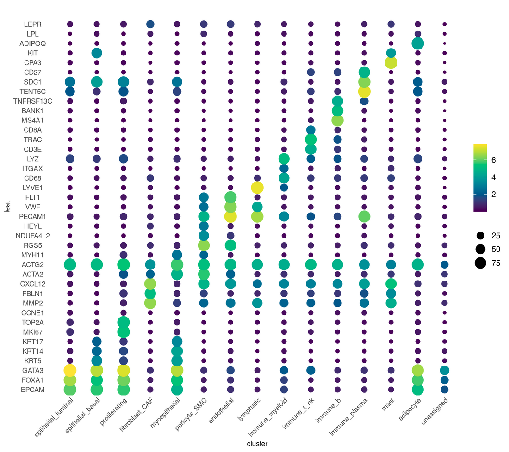
heat_genes <- unique(markers_de[order(cluster, ranking)][, head(.SD, 2), by = cluster]$feats)
plotMetaDataHeatmap(g_xen, metadata_cols = "cell_type_broad",
selected_feats = heat_genes,
expression_values = "normalized",
show_values = "zscores_rescaled",
custom_cluster_order = CELLTYPES,
x_text_angle = 45, x_text_size = 10, y_text_size = 8)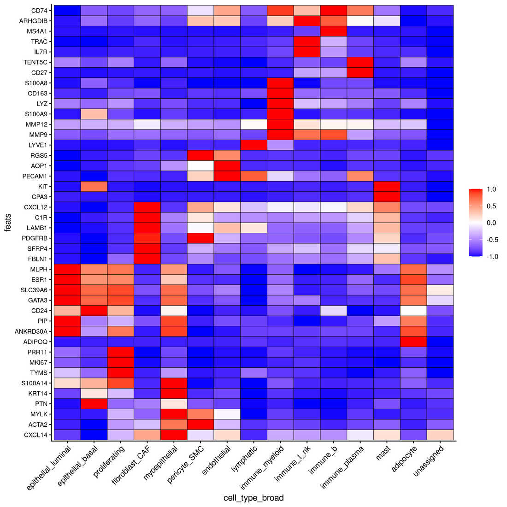
celltype_counts <- cell_metadata[, .(cells = .N), by = .(label = as.character(celltype))]
celltype_counts[, pct_of_cells := round(100 * cells / sum(cells), 2)]
setorder(celltype_counts, -cells)
celltype_counts[, label := factor(label, levels = rev(label))]
p_counts_bar <- ggplot(celltype_counts, aes(label, cells, fill = label)) +
geom_col(width = 0.75) +
scale_fill_manual(values = CELLTYPE_COLORS, drop = FALSE, na.value = "white",
guide = "none") + coord_flip() +
geom_text(aes(label = sprintf("%s (%.1f%%)",
formatC(cells, big.mark = ",", format = "d"),
pct_of_cells)), hjust = -0.06, size = 2.4) +
scale_y_continuous(expand = expansion(mult = c(0, 0.22))) +
labs(x = NULL, y = "cells", subtitle = "cells per cell type") + plot_theme
p_counts_bar
all_plots_save_function(g_xen, p_counts_bar, save_name = "celltype_counts")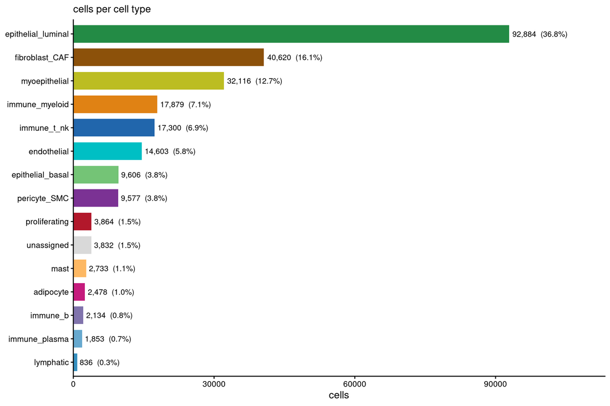
11 The annotated section
plotUMAP(g_xen, cell_color = "cell_type_broad",
cell_color_code = CELLTYPE_COLORS,
point_size = 0.25, point_alpha = 0.4,
point_shape = "border", point_border_stroke = 0,
show_center_label = FALSE)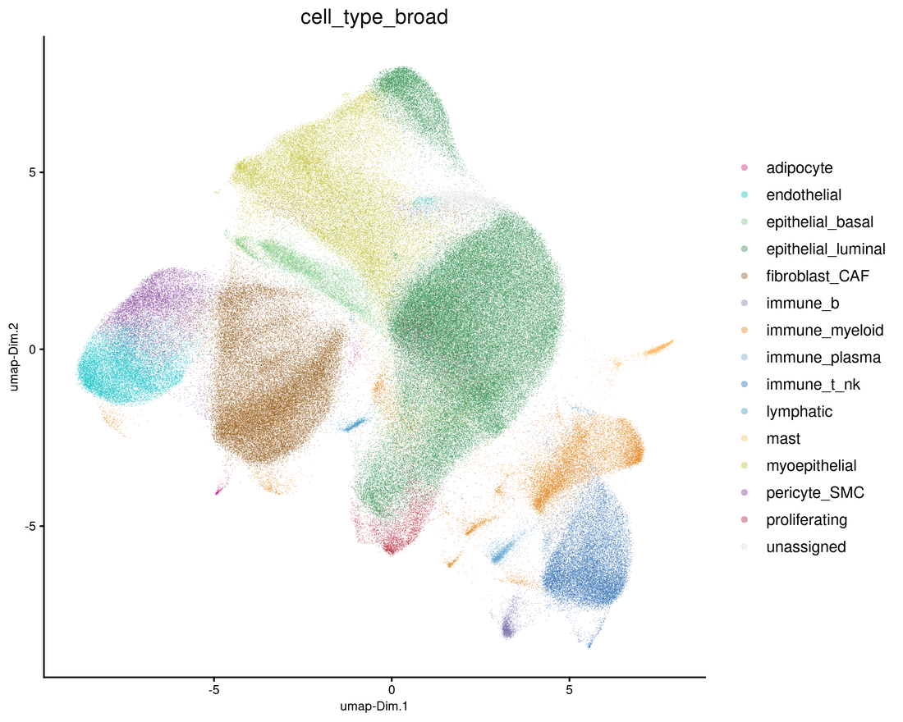
STAMP <- sprintf("S1_Bot | %s cells | %d clusters | %d cell types",
format(nrow(cell_metadata), big.mark = ","),
length(CLUS_LEVELS), length(CELLTYPES))
spatPlot2D(g_xen, cell_color = "cell_type_broad",
cell_color_code = CELLTYPE_COLORS,
point_size = 0.25, point_shape = "border",
point_border_stroke = 0, coord_fix_ratio = 1,
title = STAMP, background_color = "white")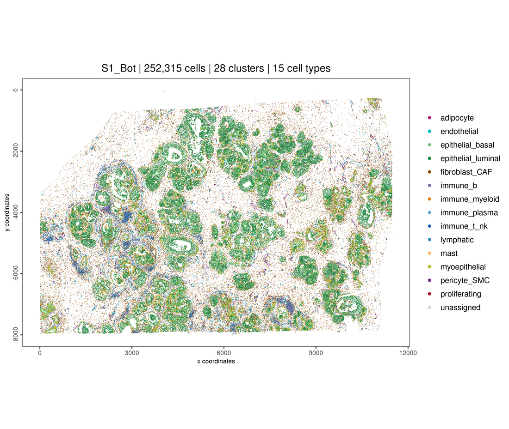
celltype_plots <- lapply(CELLTYPES, function(celltype)
spatPlot2D(g_xen, cell_color = "cell_type_broad", cell_color_code = CELLTYPE_COLORS,
select_cell_groups = celltype, show_other_cells = TRUE,
other_cell_color = "#ECECEC", other_point_size = 0.06,
point_size = 0.18, point_shape = "border", point_border_stroke = 0,
coord_fix_ratio = 1, show_legend = FALSE, title = celltype,
background_color = "white",
show_plot = FALSE, return_plot = TRUE, save_plot = FALSE))
p_facets <- plot_grid(plotlist = celltype_plots, ncol = 5)
p_facets
all_plots_save_function(g_xen, p_facets, save_name = "celltype_facets")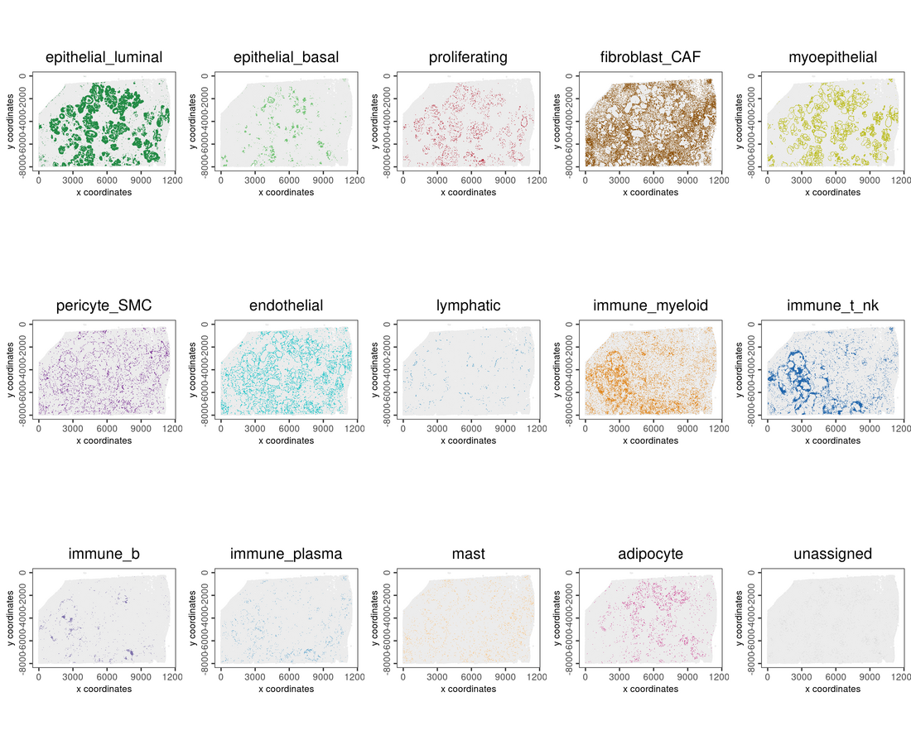
12 Segmentation boundaries and transcripts in place
ZOOM_UM <- 400
# center the window on the densest square of the section
densest <- cell_metadata[!is.na(sdimx), .N, by = .(bx = floor(sdimx / ZOOM_UM),
by_ = floor(sdimy / ZOOM_UM))][order(-N)]
cx <- (densest$bx[1] + 0.5) * ZOOM_UM
cy <- (densest$by_[1] + 0.5) * ZOOM_UM
XL <- c(cx - ZOOM_UM / 2, cx + ZOOM_UM / 2)
YL <- c(cy - ZOOM_UM / 2, cy + ZOOM_UM / 2)
g_zoom <- crop(g_xen, c(XL[1], XL[2], YL[1], YL[2]), view = "roi")
zoom_n <- nrow(cell_metadata[sdimx %between% XL & sdimy %between% YL])
cat(sprintf("window %.0f-%.0f x %.0f-%.0f um holds %s cells\n",
XL[1], XL[2], YL[1], YL[2], format(zoom_n, big.mark = ",")))
spatInSituPlotPoints(g_zoom,
show_image = TRUE, image_name = "dapi",
polygon_feat_type = "cell", show_polygon = TRUE,
polygon_fill = "cell_type_broad",
polygon_fill_as_factor = TRUE,
polygon_fill_code = CELLTYPE_COLORS,
polygon_alpha = 0.6,
polygon_color = "gray30", polygon_line_size = 0.06,
legend_text = 11, background_color = "black",
view = "roi")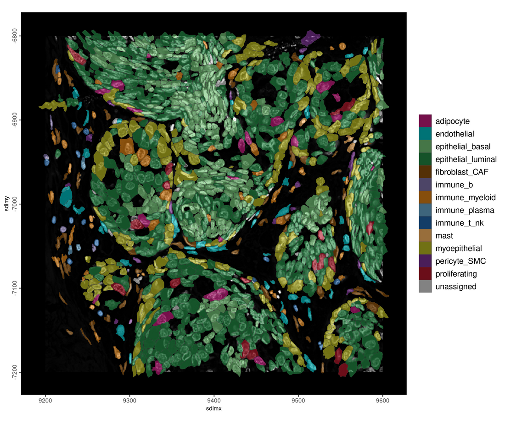
tx_genes <- intersect(c("KRT5", "CD24", "MMP11", "LYZ"), featIDs(g_xen))
TX_COLORS <- c(KRT5 = "#FFFFFF", CD24 = "#00B0FF",
MMP11 = "#FF0000", LYZ = "#A6FF00")
spatInSituPlotPoints(g_zoom,
show_image = TRUE, image_name = "dapi",
feats = list(rna = tx_genes), feat_type = "rna",
feats_color_code = TX_COLORS, use_overlap = FALSE,
plot_last = "points",
polygon_feat_type = "cell", show_polygon = TRUE,
polygon_fill = "cell_type_broad",
polygon_fill_as_factor = TRUE,
polygon_fill_code = CELLTYPE_COLORS, polygon_alpha = 0.6,
polygon_color = "gray40", polygon_line_size = 0.04,
point_size = 0.75, legend_text = 11,
background_color = "black", view = "roi")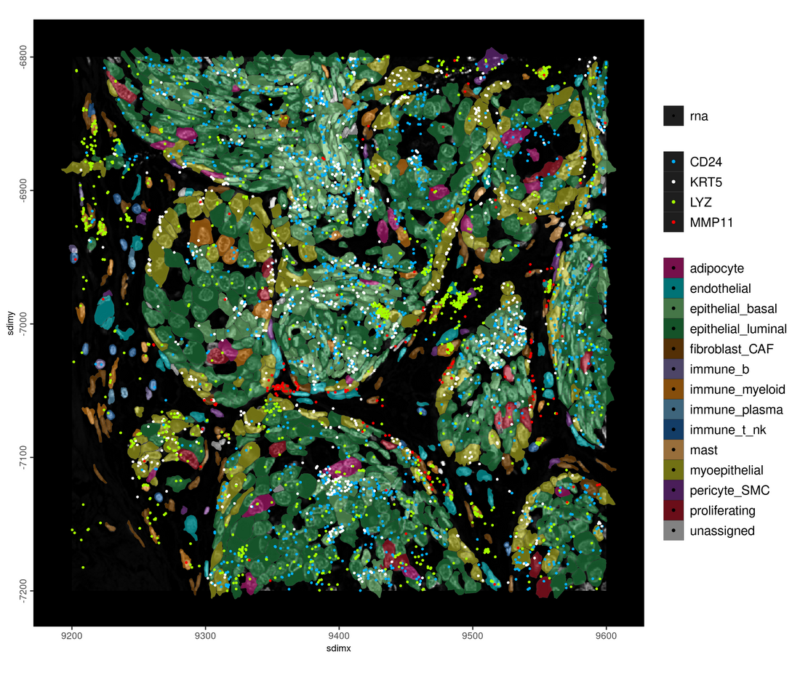
13 Spatial niches
Two cells share a niche when the mix of cell types around them looks the same, however different the two cells are themselves. Building a spatial niche takes 3 general steps: a spatial graph, the composition of labels over that graph, and a clustering of those composition vectors.
g_xen <- createSpatialNetwork(g_xen, method = "kNN", k = 30,
name = "niche_knn_30", verbose = FALSE)
g_xen <- calculateLabelProportions(
g_xen, labels = "cell_type_broad", group_method = "spatialnetwork",
spatial_network_name = "niche_knn_30", weights = FALSE,
spat_unit = "cell", feat_type = "rna",
name = "niche_props", output = "gobject", verbose = FALSE)
list_spatial_enrichments(g_xen)| spat_unit | feat_type | name |
|---|---|---|
| cell | rna | niche_props |
niche_dt <- getSpatialEnrichment(g_xen, name = "niche_props",
output = "data.table")
setDT(niche_dt)
comp_mat <- as.matrix(niche_dt[, ..CELLTYPES])
rownames(comp_mat) <- niche_dt$cell_ID
dim(comp_mat)13.1 Choosing the number of niches
Pick k from the data. The sweep runs k-means over a
range of k and records the total within-cluster sum of
squares, which always falls as k grows; the elbow is the
k furthest from the line joining the two ends of that
curve.
K_RANGE <- 3:16
set.seed(SEED)
# a 25,000-cell subsample resolves the curve's shape and keeps the sweep short
sweep_rows <- sample.int(nrow(comp_mat), min(25000L, nrow(comp_mat)))
wss <- vapply(K_RANGE, function(k)
kmeans(comp_mat[sweep_rows, ], centers = k, nstart = 5, iter.max = 50)$tot.withinss,
numeric(1))
k_n <- (K_RANGE - min(K_RANGE)) / diff(range(K_RANGE))
wss_n <- (wss - min(wss)) / diff(range(wss))
n <- length(k_n)
elbow_d <- abs((wss_n[n] - wss_n[1]) * k_n - (k_n[n] - k_n[1]) * wss_n +
k_n[n] * wss_n[1] - wss_n[n] * k_n[1]) /
sqrt((wss_n[n] - wss_n[1])^2 + (k_n[n] - k_n[1])^2)
NICHE_K <- K_RANGE[which.max(elbow_d)]
cat("chosen NICHE_K =", NICHE_K, "\n")
p_elbow <- ggplot(data.table(k = K_RANGE, wss = wss), aes(k, wss)) +
geom_line(color = "grey60") + geom_point(size = 1.6) +
geom_point(data = data.table(k = NICHE_K, wss = wss[which.max(elbow_d)]),
color = "#C44E52", size = 3) +
geom_segment(x = min(K_RANGE), y = wss[1],
xend = max(K_RANGE), yend = wss[length(wss)],
linetype = "dashed", color = "grey70") +
scale_x_continuous(breaks = K_RANGE) +
labs(x = "number of niches (k)", y = "total within-cluster sum of squares",
subtitle = sprintf("elbow at k = %d", NICHE_K)) + plot_theme
p_elbow
all_plots_save_function(g_xen, p_elbow, save_name = "niche_elbow")## chosen NICHE_K = 7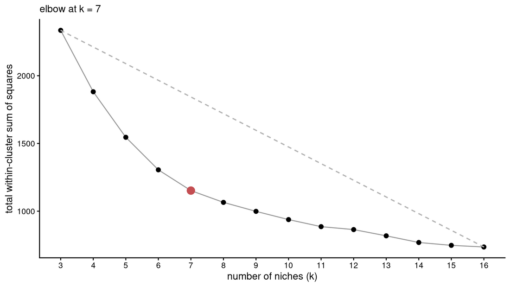
set.seed(SEED)
g_xen <- clusterData(g_xen,
clusterParam("kmeans", centers = NICHE_K,
nstart = 25, iter.max = 100),
what = "spatial_enrichment", spat_enr_name = "niche_props",
name = "niche_k", output = "gobject")
NICHE_NAMES <- c(
niche_01 = "TLS",
niche_02 = "tumor core (basal)",
niche_03 = "tumor core (luminal)",
niche_04 = "tumor-duct interface",
niche_05 = "vascular immune stroma",
niche_06 = "duct basal layer",
niche_07 = "fibroblast-rich stroma")
ANNOT_LEVELS <- sprintf("%s %s", names(NICHE_NAMES), NICHE_NAMES)
ANNOT_PAL <- setNames(getDistinctColors(length(NICHE_NAMES)), ANNOT_LEVELS)
niche_labels <- pDataDT(g_xen)[, .(cell_ID,
niche = sprintf("niche_%02d", as.integer(niche_k)))]
niche_vec <- niche_labels$niche[match(rownames(comp_mat), niche_labels$cell_ID)]
stopifnot("niche labels do not cover comp_mat" = !anyNA(niche_vec))
niche_labels[, niche_annot := ANNOT_LEVELS[match(niche, names(NICHE_NAMES))]]
niche_mean <- melt(
as.data.table(rowsum(comp_mat, niche_vec) / as.vector(table(niche_vec)),
keep.rownames = "niche"),
id.vars = "niche", variable.name = "celltype", value.name = "mean_prop")
niche_mean[, `:=`(mean_prop = mean_prop / sum(mean_prop),
annot = ANNOT_LEVELS[match(niche, names(NICHE_NAMES))]), by = niche]
g_xen <- addCellMetadata(g_xen, new_metadata = niche_labels,
by_column = TRUE, column_cell_ID = "cell_ID")
p_niche_spat <- spatPlot2D(g_xen, cell_color = "niche_annot",
cell_color_code = ANNOT_PAL,
point_size = 0.3, point_shape = "border",
point_border_stroke = 0, coord_fix_ratio = 1,
background_color = "black", return_plot = TRUE,
show_plot = FALSE, save_plot = FALSE,
title = sprintf("Spatial niches (k = %d, neighbors.k = 30)", NICHE_K)) +
guides(fill = guide_legend(nrow = 3, byrow = TRUE,
override.aes = list(size = 3.5)),
color = guide_legend(nrow = 3, byrow = TRUE,
override.aes = list(size = 3.5))) +
theme(legend.position = "bottom", legend.direction = "horizontal",
legend.box = "horizontal", legend.title = element_blank(),
legend.text = element_text(size = 10),
legend.key.size = unit(0.4, "cm"))
p_niche_spat
all_plots_save_function(g_xen, p_niche_spat, save_name = "niche_spatial")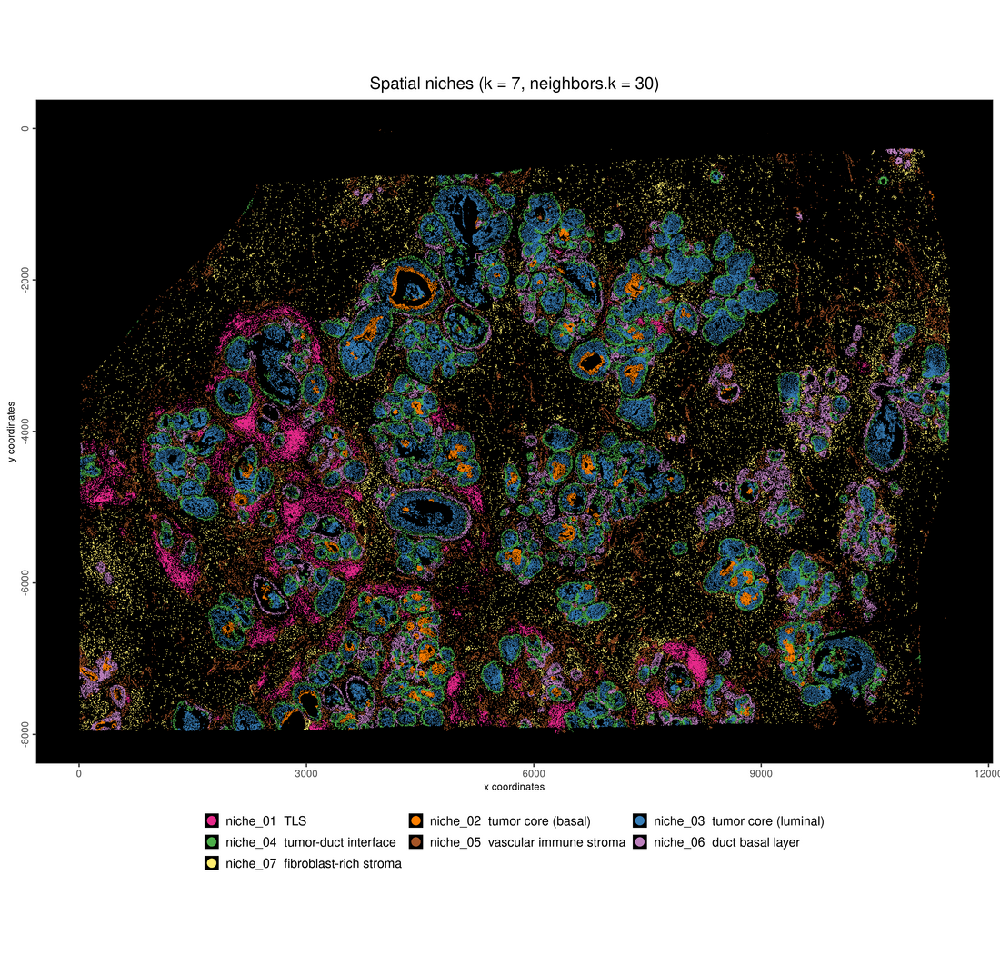
niche_by_celltype <- table(factor(pDataDT(g_xen)$cell_type_broad, levels = CELLTYPES),
pDataDT(g_xen)$niche_annot)
as.data.frame.matrix(niche_by_celltype)| cell type | niche_01 TLS |
niche_02 tumor core (basal) |
niche_03 tumor core (luminal) |
niche_04 tumor-duct interface |
niche_05 vascular immune stroma |
niche_06 duct basal layer |
niche_07 fibroblast-rich stroma |
|---|---|---|---|---|---|---|---|
| epithelial_luminal | 163 | 3,372 | 55,595 | 28,368 | 524 | 4,603 | 259 |
| epithelial_basal | 6 | 6,805 | 1,564 | 680 | 52 | 462 | 37 |
| proliferating | 30 | 55 | 976 | 1,955 | 74 | 755 | 19 |
| fibroblast_CAF | 2,258 | 14 | 51 | 2,807 | 11,324 | 6,195 | 17,971 |
| myoepithelial | 27 | 183 | 734 | 13,465 | 501 | 17,093 | 113 |
| pericyte_SMC | 677 | 6 | 20 | 812 | 5,159 | 1,436 | 1,467 |
| endothelial | 1,145 | 11 | 71 | 2,526 | 5,416 | 3,875 | 1,559 |
| lymphatic | 53 | 0 | 1 | 9 | 280 | 14 | 479 |
| immune_myeloid | 3,513 | 302 | 1,326 | 1,982 | 5,691 | 2,138 | 2,927 |
| immune_t_nk | 10,270 | 28 | 56 | 277 | 4,398 | 746 | 1,525 |
| immune_b | 1,487 | 0 | 26 | 47 | 401 | 81 | 92 |
| immune_plasma | 417 | 0 | 0 | 44 | 901 | 183 | 308 |
| mast | 206 | 2 | 10 | 111 | 990 | 392 | 1,022 |
| adipocyte | 23 | 87 | 1,352 | 547 | 158 | 91 | 220 |
| unassigned | 100 | 107 | 720 | 1,443 | 421 | 814 | 227 |
niche_profile <- niche_mean
prof_wide <- dcast(niche_profile, niche ~ celltype, value.var = "mean_prop")
prof_mat <- as.matrix(prof_wide[, -1]); rownames(prof_mat) <- prof_wide$niche
niche_hc <- hclust(dist(prof_mat), method = "ward.D2")
ORD_LEVELS <- ANNOT_LEVELS[match(rownames(prof_mat)[niche_hc$order],
names(NICHE_NAMES))]
niche_profile[, `:=`(celltype = factor(as.character(celltype), levels = CELLTYPES),
annot = factor(annot, levels = rev(ORD_LEVELS)))]
p_niche_bar <- ggplot(niche_profile, aes(x = mean_prop, y = annot, fill = celltype)) +
geom_col(width = 0.72, color = "white", linewidth = 0.25) +
scale_fill_manual(values = CELLTYPE_COLORS, drop = FALSE, name = "cell type") +
scale_x_continuous(labels = scales::percent,
expand = expansion(mult = c(0, 0.01))) +
labs(title = "Spatial niche cell type distribution",
x = "mean neighborhood composition", y = NULL) +
plot_theme +
theme(plot.title = element_text(size = 15, face = "bold"),
axis.text = element_text(size = 11),
axis.title = element_text(size = 12),
legend.key.size = unit(0.42, "cm"),
legend.text = element_text(size = 10),
legend.title = element_text(size = 11),
panel.grid.major.x = element_line(color = "grey92"))
dd <- ggdendro::dendro_data(as.dendrogram(niche_hc), type = "rectangle")
p_dendro <- ggplot(ggdendro::segment(dd)) +
geom_segment(aes(x = y, y = x, xend = yend, yend = xend), linewidth = 0.3) +
scale_x_reverse(expand = expansion(mult = c(0.03, 0))) +
scale_y_continuous(limits = c(0.5, nrow(prof_mat) + 0.5), expand = c(0, 0)) +
theme_void()
p_niche_bar <- cowplot::plot_grid(p_dendro, p_niche_bar, nrow = 1,
rel_widths = c(0.07, 1), align = "h", axis = "tb")
p_niche_bar
all_plots_save_function(g_xen, p_niche_bar, save_name = "niche_composition_bar")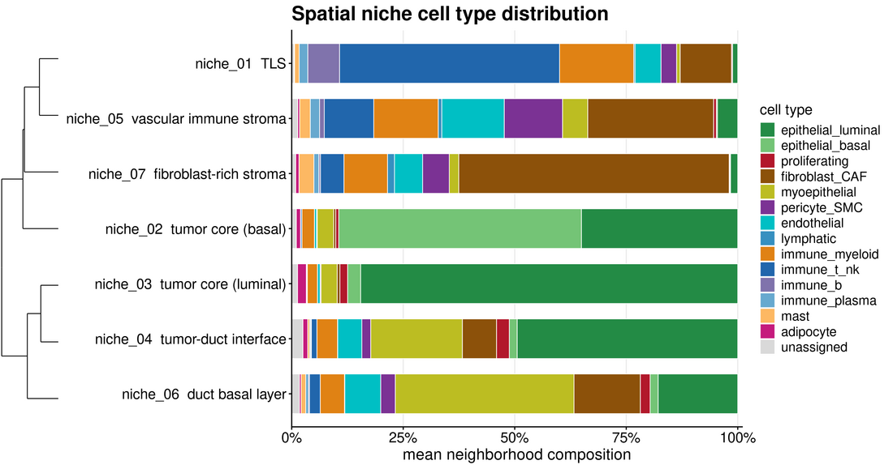
14 Session information
# release the worker processes before the document ends
future::plan(future::sequential)## R version 4.5.2 (2025-10-31)
## Platform: x86_64-pc-linux-gnu
## Running under: AlmaLinux 8.10 (Cerulean Leopard)
##
## Matrix products: default
## BLAS/LAPACK: FlexiBLAS NETLIB; LAPACK version 3.12.0
##
## locale:
## [1] LC_CTYPE=en_US.UTF-8 LC_NUMERIC=C
## [3] LC_TIME=en_US.UTF-8 LC_COLLATE=en_US.UTF-8
## [5] LC_MONETARY=en_US.UTF-8 LC_MESSAGES=en_US.UTF-8
## [7] LC_PAPER=en_US.UTF-8 LC_NAME=C
## [9] LC_ADDRESS=C LC_TELEPHONE=C
## [11] LC_MEASUREMENT=en_US.UTF-8 LC_IDENTIFICATION=C
##
## time zone: America/New_York
## tzcode source: system (glibc)
##
## attached base packages:
## [1] stats graphics grDevices utils datasets methods base
##
## other attached packages:
## [1] future_1.70.0 cowplot_1.2.0 ggplot2_4.0.2
## [4] data.table_1.18.4 GiottoDisk_0.0.0.3 GiottoVisuals_0.2.16
## [7] Giotto_4.3.0 GiottoClass_0.7.7
##
## loaded via a namespace (and not attached):
## [1] RColorBrewer_1.1-3 ggdendro_0.2.0
## [3] wk_0.9.4 jsonlite_2.0.0
## [5] magrittr_2.0.5 magick_2.9.0
## [7] farver_2.1.2 rmarkdown_2.30
## [9] ragg_1.5.0 vctrs_0.7.1
## [11] memoise_2.0.1 GiottoUtils_0.2.7
## [13] terra_1.8-93 htmltools_0.5.9
## [15] S4Arrays_1.10.1 curl_7.0.0
## [17] BiocNeighbors_2.4.0 SparseArray_1.10.8
## [19] sass_0.4.10 parallelly_1.47.0
## [21] bslib_0.10.0 htmlwidgets_1.6.4
## [23] httr2_1.2.1 plotly_4.12.0
## [25] cachem_1.1.0 igraph_2.2.1
## [27] lifecycle_1.0.5 pkgconfig_2.0.3
## [29] rsvd_1.0.5 Matrix_1.7-4
## [31] R6_2.6.1 fastmap_1.2.0
## [33] MatrixGenerics_1.22.0 digest_0.6.39
## [35] colorspace_2.1-2 S4Vectors_0.48.0
## [37] paws.storage_0.9.0 dqrng_0.4.1
## [39] irlba_2.3.7 textshaping_1.0.4
## [41] GenomicRanges_1.62.1 beachmat_2.26.0
## [43] labeling_0.4.3 filelock_1.0.3
## [45] progressr_0.18.0 Rarr_1.10.1
## [47] httr_1.4.8 polyclip_1.10-7
## [49] abind_1.4-8 compiler_4.5.2
## [51] bit64_4.6.0-1 withr_3.0.2
## [53] S7_0.2.1 backports_1.5.0
## [55] BiocParallel_1.44.0 DBI_1.3.0
## [57] viridis_0.6.5 ggforce_0.5.0
## [59] R.utils_2.13.0 duckdb_1.5.2
## [61] MASS_7.3-65 rappdirs_0.3.4
## [63] DelayedArray_0.36.0 rjson_0.2.23
## [65] bluster_1.20.0 gtools_3.9.5
## [67] tools_4.5.2 otel_0.2.0
## [69] future.apply_1.20.0 R.oo_1.27.1
## [71] glue_1.8.0 dbscan_1.2.4
## [73] grid_4.5.2 checkmate_2.3.4
## [75] cluster_2.1.8.3 generics_0.1.4
## [77] gtable_0.3.6 R.methodsS3_1.8.2
## [79] tidyr_1.3.2 metapod_1.18.0
## [81] BiocSingular_1.26.1 tidygraph_1.3.1
## [83] ScaledMatrix_1.18.0 xml2_1.5.0
## [85] XVector_0.50.0 RcppAnnoy_0.0.23
## [87] BiocGenerics_0.56.0 tilework_1.0.0
## [89] ggrepel_0.9.6 pillar_1.11.1
## [91] limma_3.66.0 RcppHNSW_0.6.0
## [93] dplyr_1.2.0 tweenr_2.0.3
## [95] lattice_0.22-7 bit_4.6.0
## [97] tidyselect_1.2.1 paws.common_0.8.5
## [99] locfit_1.5-9.12 SingleCellExperiment_1.32.0
## [101] scuttle_1.20.0 knitr_1.51
## [103] gridExtra_2.3 IRanges_2.44.0
## [105] Seqinfo_1.0.0 edgeR_4.8.2
## [107] SummarizedExperiment_1.40.0 scattermore_1.2
## [109] stats4_4.5.2 xfun_0.56
## [111] graphlayouts_1.2.3 Biobase_2.70.0
## [113] statmod_1.5.1 matrixStats_1.5.0
## [115] lazyeval_0.2.2 yaml_2.3.12
## [117] evaluate_1.0.5 codetools_0.2-20
## [119] ggraph_2.2.2 tibble_3.3.1
## [121] colorRamp2_0.1.0 cli_3.6.6
## [123] uwot_0.2.4 arrow_25.0.0
## [125] reticulate_1.45.0 systemfonts_1.3.1
## [127] jquerylib_0.1.4 dichromat_2.0-0.1
## [129] Rcpp_1.1.1-1.1 globals_0.19.1
## [131] dbplyr_2.5.1 png_0.1-8
## [133] parallel_4.5.2 assertthat_0.2.1
## [135] scran_1.38.1 listenv_0.10.1
## [137] SpatialExperiment_1.20.0 viridisLite_0.4.3
## [139] scales_1.4.0 purrr_1.2.1
## [141] crayon_1.5.3 rlang_1.2.0NA ```